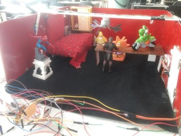
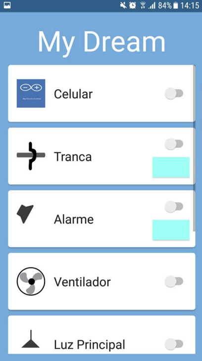

A Smart House (MyDream)
For a college job was developed a model of a smart home. In it you can control the electrical objects from the cell phone, facebook or website. If the user is not present in the room, it also has intelligence that allows it to be controlled according to the weather conditions. Like when the user leaves the house in the morning and leaves the window open, his work is not raining, but the house is, so the house can detect the rain and close the window automatically.
Below is the image of the website, which was built with HTML, CSS and Javascript. Using the free 000webhost server. On site you can turn on and off the electrical components. In addition to see if they are on or off (closed / open) in real time.

Below is the image of the model of the smart room, which was built using the Wemos D1, because it has an internet connection.

Below is the facebook chatbot image, which was built using the node.js framework and the code was uploaded to the free Glitch server. Chatting with the chatbot enables the electrical components to be switched on and off. In addition to see if they are on or off (closed / open) in real time.

Below is the server image, which was built with the node.js framework and was uploaded to the free Heroku server.

Below is the image of the mobile application, which was built using the Java programming language in Android Studio. With the application it is possible to connect and disconnect the electrical components. In addition to see if they are on or off (closed / open) in real time.

Close Project